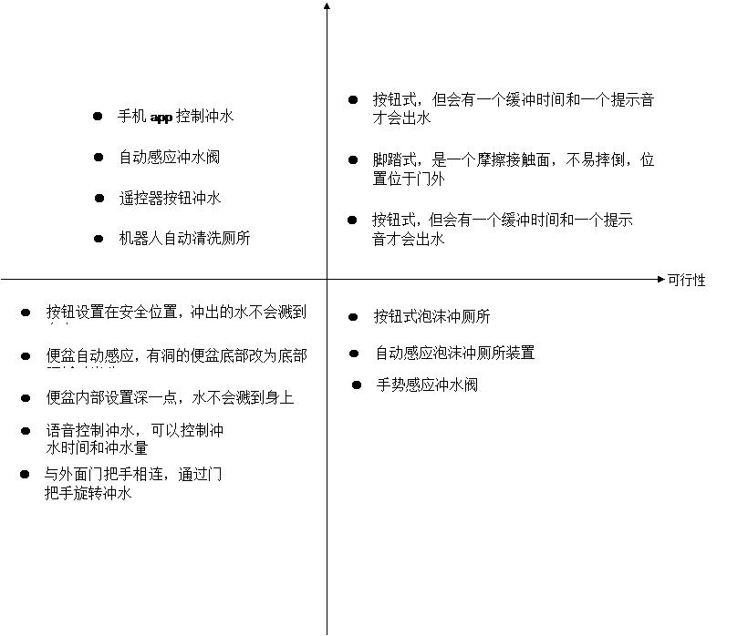

头脑风暴前
头脑风暴主题：冲厕所方式的设计
头脑风暴的方式：随意发言
参与者：12个
思考时间：1天
头脑风暴中
风暴1：
规则：自由发言，相互不能进行批评和讨论
得出的风暴方案
1、脚踏式冲水阀
2、手势感应冲水阀
3、自动感应冲水阀
4、手机app控制冲水
5、遥控器按钮冲水
6、与门把手相连，通过门把手旋转冲水，旋转角度控制水量
7、按压式按钮冲水，按压后水会过10几秒后才出来
8、自动感应泡沫冲厕所装置
9、便盆自动感应，有洞的便盆底部改为底部隔板对半分，拉屎时，隔板自动向下选择90度，屎直接进入便坑，屎进入后隔板自动恢复，这样就不用冲厕所
10、按钮设置在安全位置，冲出的水不会溅到身上
11、便盆内部设置深一点，水不会溅到身上
12、语音控制冲水，可以控制冲水时间和冲水量
13、机器人自动清洗厕所
风暴2：
规则：在关键词内进行头脑风暴，自由发言，相互不能批评和讨论
关键词：方便、成本低、安全
1、按钮式，但会有一个缓冲时间和一个提示音才会出水
2、脚踏式，是一个摩擦接触面，不易摔倒，位置位于门外
3、按钮式泡沫冲厕所，泡沫可以节约水，可以去味，在压力很大的情况下可以冲厕所，并不会溅到身上
4、冲水装置与门外把手相连，通过旋转角度控制出水量，水不会溅到身上
5、不改变厕所的设备，通过视觉提醒改变人的内心感受
l 头脑风暴后按钮式，但会有一个缓冲时间和一个提示音才会出水
效果
整理、分析
